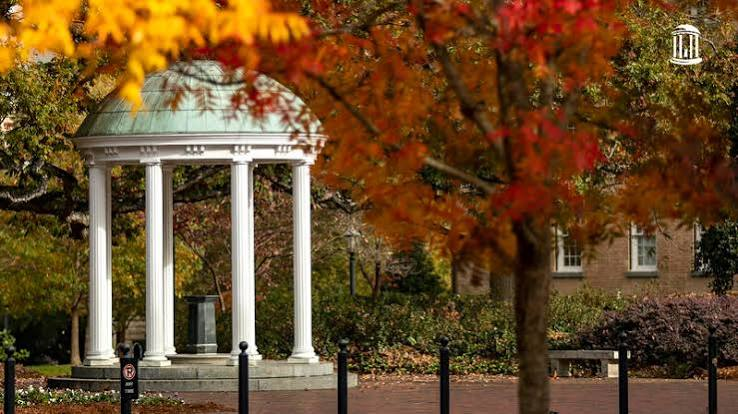

Connor K Johnson
University of North Carolina at Chapel Hill
"Science is not done alone. It is done through talking with others and sharing that progress is made."
- Carol W. Greider

I have learned many times in my life that doing things together is the best way to do them. Consistent with the quote from Greider, science itself cannot be done alone, meaning that connections are some of the best things that can be gained. The earliest I learned this lesson was on my high school tennis team. Even in a sport like tennis where it can be isolating, everyone is working towards getting the win together which in turn forces connections to be made. Medicine works the same way. Without collaboration, nothing new would be discovered due to the lack of spreading information. This causes the medical community to work together to advance technology and treat patients effectively. Consequently, I have seen this actively in my community. The hospital in my hometown is very active in the community and visited my high school many times to share experiences and talk about the jobs. I hope to join this community over the summers and work as either an EMT or CNA. This will help me gain medical experience back home while I also learn more of lab related science at the University of North Carolina at Chapel Hill. I am going to use my opportunities at university to study neuroscience and cognition where I hope to join a lab and conduct research to help gain information on the way the human brain functions. This will help me further my education as well as teach me how to better work in a team especially in a scientific environment. This will be one of the most important skills I learn as it will forward my ability to be able to work in scientific and/or medical related fields in my future.
Future Goals:
One of my goals is to gain my Emergency Medical Technician (EMT) certification or become a CNA over the summer and get involved in the medical field. I want to work as an EMT and experience what it is like to help patients. I also plan to take part in research to further my knowledge within the field of neuroscience. I’m very interested in cognition and thinking as well as sensation and perception.
By graduation I would like to complete an honors thesis and graduate with honors and have extensive lab experience. I hope to apply to medical school and get in to continue my education in the medical field.